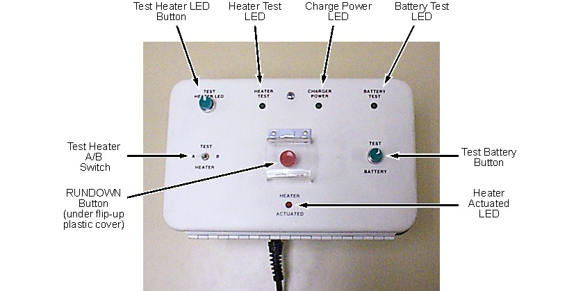

Operating Documentation
Direction 5440000, Rev# 5
Signa HDxt Service Methods
Module Version 5.0, Version Date 2/9/10
Operating Documentation |
| Required Persons | Preliminary Reqs | Procedure | Finalization |
|---|---|---|---|
| 1 | Included in Procedure | 0.5 hr. for Weekly Check; 1 hr. for Yearly Check | Included in Procedure |
The following procedures apply to both the old (2128700) and new (5180313) MRU. Check the basic functioning of the MRU weekly and full functioning yearly. If the MRU fails any check, immediately contact your MAC Team representative.
| Item | Qty | Effectivity | Part# | Manufacturer | |
|---|---|---|---|---|---|
| Nonabsorbent Protective Clothing (long sleeve shirt and pants) | 1 set per person | - | - | - | |
| Electrically Insulating Gloves | 1 pair per person | - | - | - | |
| Safety Glasses | 1 pair per person | - | - | - | |
| Nonferrous Safety Shoes | 1 pair per person | - | - | - | |
| Brass Master Padlock with Brass Shackle | 1 | - | 46-194427P320 | - | |
| Brass Master Transition Padlock | 1 | - | 2387081 | - | |
| Black & White on Red Lockout Tag | 1 pkg. of 25 | - | 46-194427P322 | - | |
| Transition LOTO Tag | 1 | - | 46-194427P313 | - | |
| Line Cord Plug Cover, Plugs ≤3 in. (76 mm) wide x ≤5.875 in. (149 mm) long, Cords ≤1.25 in. (31 mm) diameter | 1 | - | 46-194427P321 | - | |
| MRU Service Manual (Vendor manual included in Manual Collector.) | 1 | Original Primary MRU 2128700 and Remote MRU 5128755 | 46-318393 | - | |
| MRU Operation Manual (Vendor manual included in Manual Collector.) | 1 | Original MRUs 2128700 / 5128755 | 46-318394 | - | |
| MRU Operation and Service Manual (Vendor manual included in Manual Collector.) | 1 | New Primary MRU 5180313 and Remote MRU 5180187 | 5256188 | - | |
| 3.5 Digit Digital Voltmeter (Do not use a Volt-Ohm Meter.) | 1 | - | - | - | |
| 20 ohm 5% 20 watt Ceramic Resistor (shipped with MRU or field-supplied equivalent) | 1 | - | - | - | |
| Titanium Tool Kit, Basic Set 5113258; Titanium Tool Kit, Installation Set 5112581 or other nonferromagnetic tools (Magnets with magnetic fields ≤1.5T) | 1 kit | - | 5113258 or 5112581 | - | |
| Item | Qty | Effectivity | Part# | Manufacturer |
|---|---|---|---|---|
| Silicone Grease or Petroleum Jelly | 1 container | - | - | - |
| ||||
| Potential Magnet Quench! | ||||
| Inadvertently pressing the MRU RUNDOWN button on any MRU connected to the magnet will quench the magnet, resulting in the rapid expulsion of helium. | ||||
| DO NOT PRESS THE RUNDOWN BUTTON DURING MRU FUNCTIONAL CHECKS. |
| ||||
| Electrical Shock Hazard! | ||||
| Contact with MRU wiring while power is supplied can cause electrical shock. | ||||
| Disconnect input power to the MRU being checked, and follow OSHA Lockout-Tagout (LOTO) procedures while performing yearly MRU check. |
| ||||
| Potential Magnet Quench! | ||||
| RELAY MAY STILL BE ACTIVE. | ||||
| do not connect the MRU CABLE TO THE MAGNET UNTIL 3 MINUTES AFTER activating AC POWER TO THE MRU. |
Verify that the green Charger Power LED is illuminated. (See Illustration 1.)
Illustration 1: Magnet Rundown Unit

| NOTE: | The original MRU is shown in Illustration 1. The new style MRU has identical LED and button layouts. |
Depress the [Test Battery] button, and the green Test Battery LED should illuminate.
Place the Test Heater Switch in the A position, and the green Heater Test LED should illuminate.
Place the Heater Tester Switch in the B position, and the green Heater Test LED should light.
If the Heater Test LED does not illuminate, depress the [Test Heater LED] button to verify that the LED is functioning.
| NOTE: | See Magnet Electrical Checks for the Main Switch Heaters continuity check. |
Perform yearly MRU checks in conformance with the vendor manual.
Perform weekly checks in conformance with Weekly MRU Checks, Weekly MRU Checks.
| ||||
| Electrical Shock Hazard! | ||||
| Contact with MRU wiring while power is supplied can cause electrical shock. | ||||
| Disconnect input power to MRU being checked and Follow lockout/tagout (LOTO) procedures while performing yearly MRU check. |
Check each installed MRU:
Disconnect and LOTO input power to the MRU being checked. Verify that no voltage is present by using a DVM or equivalent measuring device.
Open the MRU front cover, and disconnect the 4-pin Lemo Connector (P2) from the Connector J3 behind the MRU cover.
| NOTE: | See Magnet Rundown Unit (MRU) Installation for a dual MRU block diagram and Magnet System Interconnects for wiring diagrams. |
Remove LOTO, and connect input power to the MRU being checked.
Perform yearly MRU checks in conformance with the vendor manual.
Disconnect and LOTO input power to the MRU being checked. Verify that no voltage is present by using a DVM or equivalent measuring device.
Reconnect the 4-pin Lemo Connector (P2) to Connector J3 behind the MRU cover, and close the MRU front cover.
Remove LOTO, and connect input power to the MRU being checked.
No finalization steps.